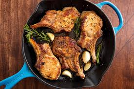

Porkchops Recipe

A delicious oven baked porkchop, yum!
These porkchops are to die for! This dish is as great for a romantic dinner date
as it is for a weekday dinner with the family. With a short list of ingredients
and some prep,
you can have these set and ready to eat in no time!
Ingredients:
- 4 pork loin chops
- Kosher salt
- Freshly ground black pepper (to taste)
- 1 tbsp. freshly minced rosemary
- 2 cloves garlic, minced
- 1/2 c. (1 stick) butter, melted
- 1 tbsp. extra virgin olive oil
Steps:
- Preheat oven to 375°. Season pork chops generously with salt and pepper
- In a small bowl mix together butter, rosemarry, and garlic. Set aside.
-
In an oven safe skillet over medium-high heat, heat olive oil then add pork chops.
Sear until golden, 4 minutes, flip and cook 4 minutes more. Brush pork chops generously
with garlic butter.
-
Place skillet in oven and cook until cooked through (145° for medium), 10-12 minutes.
Serve with more garlic butter.